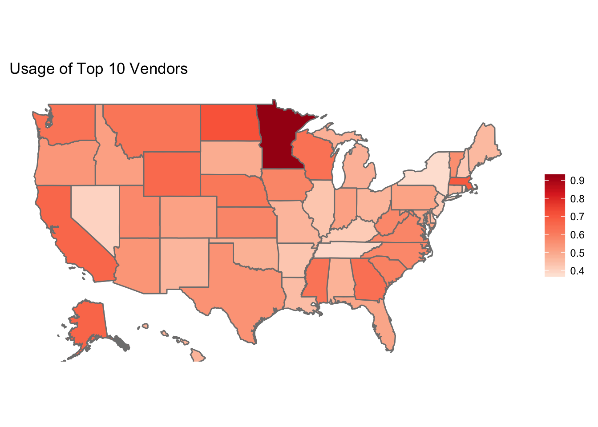

Analysis
The Physician-Level Model
To explore physician-level data, we used two methods to find associations between variables.
Because we had many categorical variables with a large number of levels, we used association rule learning to explore the relationship between our variables of interest. From this method, we found that the following factors had the most meaningful associations:
- Medical School attended
- Primary Specialty
- Gender
However, we decided not to include medical school and primary specialty in our final model because medical school and primary specialty are highly correlated (think specialty-specific school such as chiropractic schools) and there were too many categorical levels of these variables to gain valuable insights regarding correlation.
dat <- readRDS("~/Desktop/BST 260/BST-260-Final-Project-Site/EPs.rds")
EPs <- dat %>% filter(st %in% c(state.abb, "DC") & hosp_afl_1 == '') %>%
filter(gndr %in% c("F", "M") & !is.na(grd_yr)) %>%
mutate(yrs_grd = 2016 - as.integer(grd_yr),
cred = case_when(cred == '' ~ 'NA',
TRUE ~ as.character(cred)),
cred = as.factor(cred),
ehr = case_when(ehr == 'Y' ~ 1,
ehr == '' ~ 0),
ehr = as.factor(ehr)) %>%
select(-hosp_afl_1, -hosp_afl_lbn_1, -frst_nm) %>%
arrange(desc(ehr)) %>%
distinct(npi, .keep_all = TRUE)#physurl <- "https://raw.githubusercontent.com/euniceyeh/EHR-Project/blob/master/data/EPs.rds"
#download.file(physurl, "EPs.rds", method = 'curl')
#EPs <- readRDS("EPs.rds")Using other exploratory methods such as plots and correlation matrices, we eliminated other variables that could be used to study the effects on EHR usage. We decided to study the effect of gender and years since graduation on EHR adoption among physicians, since there was adequate data on these variables and they were evenly distributed among the two outcome groups (use EHR/don’t use EHR).
Our physician-level model looked at the effect of physician gender and years since graduation on adoption of electronic health records.
Using logistic regression, we found that physician gender and years since graduation have statistically significant effects on the use of EHR among practitioners in the incentive program. The results of our model are presented and summarized below.
| Variable | Odds Ratio | Confidence Interval (lower) | Confidence Interval (upper) |
|---|---|---|---|
| Gender (Male) | 2.0266 | 1.9732 | 2.0815 |
| Years Since Graduation | 1.0172 | 1.0163 | 1.01819 |
| Locations | 1.0024 | 0.9978 | 1.0060 |
- Holding years since graduation and locations at a fixed value, the odds of adopting EHR for males is 2.0266 the odds of adopting EHR for females (102.6% higher odds).
- Holding gender (male) and locations at a fixed value, the odds of adopting EHR has a 1.7% increase for each additional year since graduation.
The Hospital-Level Model
For hospital demographic information, we used correlation matrices to study the relationships between hospital demographics such as:
- Number of staffed beds
- Total discharges
- Number of patient days
- Gross patient revenue
However, we found that these variables were highly correlated with each other and follow the same distributions by EHR use. This makes logical sense because these demographics are all related to hospital size.
After observing strong associations between gross patient revenue and the other variables, we decided to stratify our analysis on revenue to account for confounding. We used more correlation matrices and fitted multiple models to find the best combination of hospital demographics that influenced the adoption of EHR’s. Additionally, we rescaled the variables on the log scale to help normalize their distributions.
Our hospital-level model looked at the effect of gross patient revenue and total discharges on hospitals’ adoption of electronic health records.
Using logistic regression, we added an interaction term between gross patient revenue and total discharges. We found that hospitals’ gross patient revenue and total discharges have no statistically significant effect on the use of EHR among practitioners in the incentive program, despite being highly correlated to EHR usage. The results of our model are presented and summarized below.
| Variable (logged) | Odds Ratio | Confidence Interval (lower) | Confidence Interval (upper) |
|---|---|---|---|
| Gross Patient Revenue | 0.8679 | 0.14765 | 3.53518 |
| Total Discharges | 0.8066 | 0.07675 | 4.58805 |
| Interaction Term | 0.9967 | 0.87087 | 1.1898 |
- If the total discharge is equal at 5000, the odds of using EHR is 2.92 times higher with each 10% increase in gross patient revenue.
- If the gross patient revenue is equal at 5000, the odds of using EHR is 2.95 times higher with each 10 % increase in total discharges.
Secondary Analyses
Of the 265 vendors used by practitioners in our dataset, we found that over 50% of the products used were from the top 10 most popular vendors.

We compared the most common vendors to the most common primary specialties and found some interesting patterns:

Some vendors are highly specialized
- Integrated Practice Solutions is only used by chiropractors and is the most popular product among chiropractors
- Eyefinity seems to only provide EHR products for eye care, since only opthalmologists and optometrists use their products
- Modernizing Medicine is very popular with dermatologists
- NextGen Healthcare seems to be the most popular EHR vendor in eye care
Other vendors are just generally popular
- Examples include: Epic Systems, Cerner Corporation, and athenahealth
Across the country, we can see that the most popular vendors are used very popularly in Minnesota, but not in New York, Tennessee, Rhode Island, and Nevada.

Interestingly, there tend to be younger (more recently trained) practitioners in Minnesota who use EHR compared to the rest of the United States.

Taking a closer look at the graduation year data in Minnesota, we can see that most physicians lived near Minneapolis. It also seemed like more recently graduated physicians lived near the city, while older physicians tended to live farther away in suburban or rural areas.